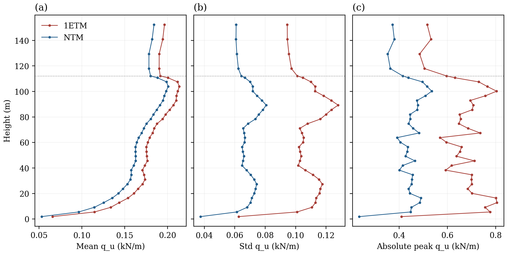
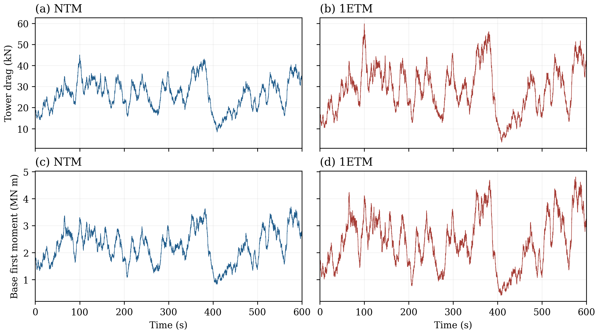
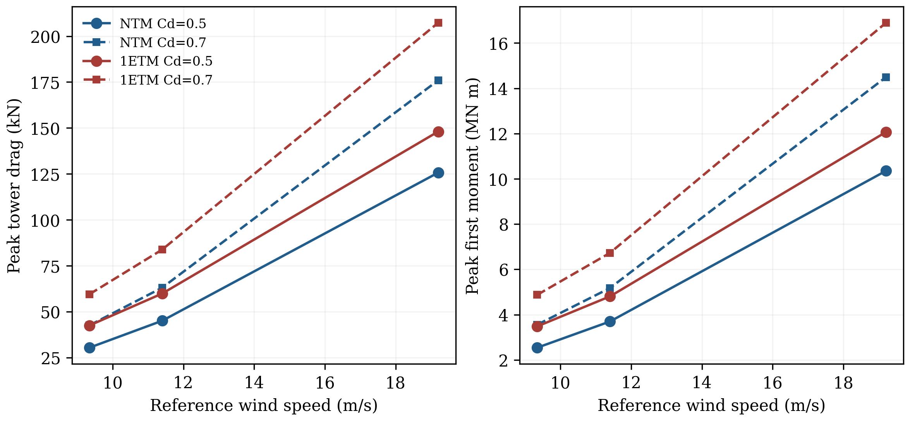

158 m混合塔架独立准定常风阻
真实网格外轮廓、六组原生BTS SHA-256核验。31混凝土段、4钢段、1过渡法兰。静止竖直塔架，基线Cd=0.5、对照0.7；非规范最终系数、非气动弹性求解、非Abaqus外载准入。
审核记录 · 几何源数据 · 统计表 · 复现程序

塔身沿高风阻线荷载统计 · SVG · PDF
额定风速塔身风阻合力及基底一阶矩时程 · SVG · PDF
阻力系数敏感性及峰值荷载 · SVG · PDF